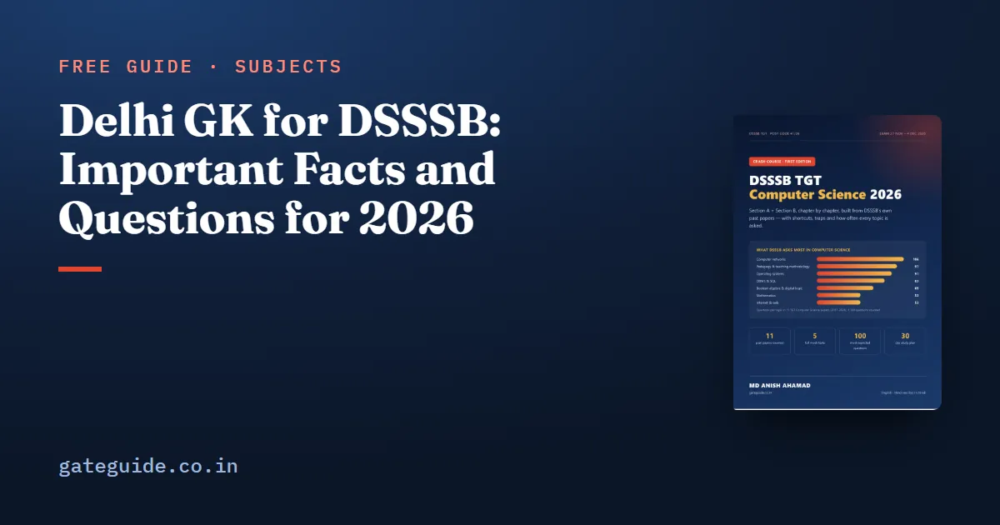

Delhi GK for DSSSB: Important Facts and Questions for 2026

Delhi GK for DSSSB is a small part of General Awareness, but it is the most predictable part: the same monuments, dates and constitutional facts return paper after paper. This guide collects the high-yield Delhi facts, groups them for quick revision, and ends with practice questions.
In this guide
Key takeaways
- Delhi's special status: Article 239AA, 69th Amendment (1991).
- Assembly 70 seats; Lok Sabha 7; Rajya Sabha 3.
- Lieutenant Governor Taranjit Singh Sandhu (from March 2026); Chief Minister Rekha Gupta (from February 2025).
- Three UNESCO sites: Qutb Minar and Humayun's Tomb (1993), Red Fort (2007).
- Delhi Sultanate order: Slave (Mamluk), Khalji, Tughlaq, Sayyid, Lodi.
The words you will meet
- NCT — National Capital Territory, Delhi's constitutional name since 1991.
- LG — Lieutenant Governor, the administrator appointed by the President.
- Delhi Sultanate — the five dynasties that ruled from Delhi between 1206 and 1526.
Administration and polity
| Fact | Answer |
|---|---|
| Special provisions for Delhi | Article 239AA (69th Amendment, 1991) |
| Legislative Assembly seats | 70 |
| Lok Sabha seats | 7 |
| Rajya Sabha seats | 3 |
| Lieutenant Governor | Taranjit Singh Sandhu (since March 2026) |
| Chief Minister | Rekha Gupta (since February 2025) |
| Became a Union Territory | 1956 |
Remember: the LG changed in March 2026. Older books and papers name V. K. Saxena — learn both and read the date in the question.
History and the capital
| Fact | Answer |
|---|---|
| Capital moved from Calcutta to Delhi | announced at the Delhi Durbar, 1911 (George V) |
| New Delhi inaugurated | 1931 |
| Architects of New Delhi | Edwin Lutyens and Herbert Baker |
| Delhi Sultanate | Slave → Khalji → Tughlaq → Sayyid → Lodi (1206–1526) |
| First Battle of Panipat | 1526 — Babur defeated Ibrahim Lodi |
| Capital shifted to Daulatabad | Muhammad bin Tughlaq |
Monuments
| Monument | Built by / fact |
|---|---|
| Qutb Minar | begun by Qutb-ud-din Aibak, completed by Iltutmish; UNESCO 1993 |
| Humayun's Tomb | Hamida Banu Begum (about 1570); UNESCO 1993 |
| Red Fort | Shah Jahan (1639–48); UNESCO 2007 |
| Jama Masjid | Shah Jahan |
| Jantar Mantar | Sawai Jai Singh II (1724) |
| Purana Qila | Humayun's Dinpanah, rebuilt by Sher Shah Suri |
| Tughlaqabad Fort | Ghiyasuddin Tughlaq |
| Hauz Khas | Alauddin Khalji's reservoir |
| Lotus Temple | Bahá'í house of worship (1986) |
| India Gate | war memorial designed by Lutyens (1931) |
Trap: Qutb Minar was begun by Aibak but completed by Iltutmish. The question wording decides the answer.
Geography and city life
- River: Yamuna. The Ridge is the northern end of the Aravalli range.
- Delhi Metro's first line opened on 24 December 2002 (Shahdara–Tis Hazari); DMRC was set up in 1995.
- Delhi school initiatives often asked in teaching exams: Happiness Curriculum (2018), Entrepreneurship Mindset Curriculum (2019), Delhi Board of School Education and Schools of Specialised Excellence (2021).
Practice questions
- Delhi's special status comes from Article (a) 370 (b) 239AA (c) 371 (d) 356 — (b)
- Qutb Minar was completed by (a) Aibak (b) Iltutmish (c) Balban (d) Alauddin — (b)
- Humayun's Tomb was built by (a) Akbar (b) Hamida Banu Begum (c) Shah Jahan (d) Babur — (b)
- Seats in the Delhi Legislative Assembly (a) 60 (b) 70 (c) 80 (d) 90 — (b)
- The last dynasty of the Delhi Sultanate (a) Tughlaq (b) Sayyid (c) Lodi (d) Khalji — (c)
Delhi GK is one part of Section A; our Section A strategy covers the rest, the exam pattern guide explains how Section A counts, and the 45-day plan gives Delhi GK its revision slot.
How to remember Delhi GK
Delhi facts stick better as stories than as lists. Walk through the city's history in order: the Sultanate builds Qutb Minar, Hauz Khas and Tughlaqabad; the Mughals add Humayun's Tomb, the Red Fort and Jama Masjid; the British move the capital in 1911 and build New Delhi; the Constitution gives the NCT its status in 1991. Each monument then has a place on the timeline, and the "who built it" questions answer themselves.
Why Delhi GK is worth an evening
General Awareness is the least predictable part of Section A. Current affairs can come from anywhere, and static GK covers the whole of history, geography, polity and science. Delhi GK is the opposite: a small, closed set of facts that DSSSB, as Delhi's own recruitment board, returns to again and again. One focused evening of revision can make one or two General Awareness questions almost certain marks.
The facts fall into three groups. The first is administration — the constitutional basis of Delhi's status, the number of seats, and who holds the offices of Lieutenant Governor and Chief Minister. These change rarely, but when they change the question appears quickly, which is why the March 2026 change of Lieutenant Governor matters. The second group is history — the Sultanate dynasties, the battles fought for Delhi and the shift of the capital in 1911. The third is monuments, where questions almost always ask who built a structure or when it became a World Heritage Site.
Common mistakes in Delhi GK questions
The most common mistake is mixing up who began and who completed a monument. Qutb Minar was begun by Qutb-ud-din Aibak and completed by Iltutmish; a question that says "completed by" expects Iltutmish. The second mistake is answering from an old book. Office-holders change, and DSSSB papers are written by people who follow the news, so the current Lieutenant Governor and Chief Minister must come from a recent source. The third mistake is confusing the year Delhi became a Union Territory (1956) with the year it became the National Capital Territory (1991). Keep a small card with these three pairs and read it the night before the exam.
Finally, remember that Delhi GK sits inside the 20 General Awareness questions, and Section A has no separate minimum. Delhi GK is worth an evening, not a week. Spend the rest of your General Awareness time on static facts that appear in every paper and on the last six months of current affairs.
A five-minute self-test
Before the exam, close this page and answer from memory: the article for Delhi's status, the three seat counts, the two office-holders, the three UNESCO sites with their years, and the five Sultanate dynasties in order. If you can write all of them in five minutes, your Delhi GK revision is complete.
Quick revision
- Article 239AA, 69th Amendment, 1991.
- 70 / 7 / 3 seats; LG Taranjit Singh Sandhu; CM Rekha Gupta.
- UNESCO: Qutb Minar and Humayun's Tomb 1993, Red Fort 2007.
- Sultanate: Slave, Khalji, Tughlaq, Sayyid, Lodi.
- Capital to Delhi 1911; New Delhi 1931; Metro 2002.
Frequently asked questions
How many Delhi GK questions come in DSSSB TGT?
In the TGT papers analysed, Delhi-specific questions were a small part of the 20 General Awareness questions - typically one or two per paper - but they are among the most predictable. Monuments, Delhi's constitutional status and the Delhi Sultanate are the safest areas to revise.
Who is the Lieutenant Governor of Delhi in 2026?
Taranjit Singh Sandhu, a former diplomat, became Lieutenant Governor of Delhi in March 2026, succeeding Vinai Kumar Saxena, who moved to Ladakh as its Lieutenant Governor. Rekha Gupta has been Chief Minister of Delhi since February 2025.
Which UNESCO World Heritage Sites are in Delhi?
Delhi has three - Qutb Minar and its monuments and Humayun's Tomb, both inscribed in 1993, and the Red Fort Complex, inscribed in 2007. A useful memory aid is Q, H and R in that order of listing, with the first two sharing the same year.
Under which article does Delhi have its special status?
Article 239AA of the Constitution, inserted by the 69th Amendment in 1991, gives Delhi its status as the National Capital Territory with a Legislative Assembly. The Government of National Capital Territory of Delhi Act, 1991 provides the details of how the government works.
Sources
Dates, vacancies and the syllabus are set by DSSSB and can change. Always confirm at dsssb.delhi.gov.in. GATE Guide is not affiliated with DSSSB.